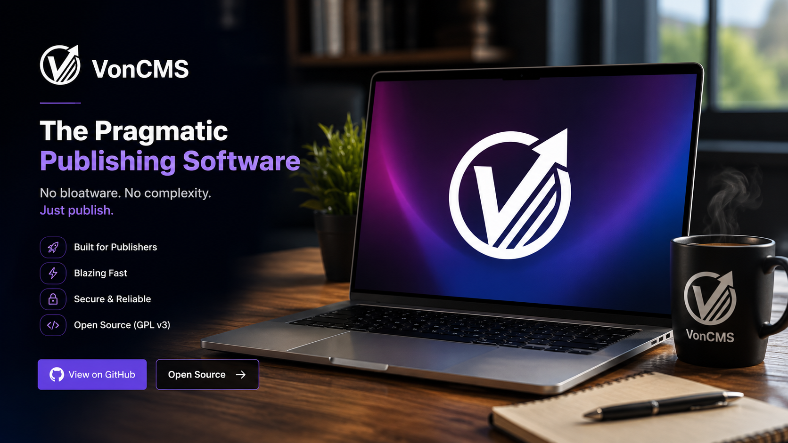

Content
Posts, pages, drafts, scheduled publishing, categories, excerpts, metadata, keywords, quick edit, and responsive images.
VonCMS pairs a React 19 editorial dashboard with a PHP and MySQL runtime for publishers who want modern admin tools, clean themes, SEO-friendly output, and no heavy plugin stack.

Deploy ZIP for runtime sites. Source repository for developers, agencies, custom themes, plugins, and release packages.
VonCMS keeps normal hosting simple while still giving developers source-level control. Runtime sites install from a release ZIP. Source users can fork, customize, build, test, and package their own release.


The React admin dashboard covers posts, pages, drafts, scheduled publishing, rich editing, media tools, settings, users, comments, contact forms, newsletters, audit logs, and repair tools.
The important site features ship as part of the baseline so a normal publishing site does not start life as a dependency maze.
Posts, pages, drafts, scheduled publishing, categories, excerpts, metadata, keywords, quick edit, and responsive images.
Bundled themes, menus, profiles, category views, search, comments, feeds, sitemap, robots output, and llms.txt.
Built-in SEO, analytics, gift widget, related posts, promo bar, and AI summary plugins with activation controls.
Theme registry, plugin registration, PHP APIs, smoke tests, release packaging, source docs, and GPL-3.0-only licensing.
Traditional CMS stacks can become slow and plugin-heavy. Headless stacks often add build pipelines, paid hosting assumptions, and too many moving parts. VonCMS keeps the runtime ordinary and the source customizable.
| Area | Common trade-off | VonCMS baseline |
|---|---|---|
| Hosting | Plugin stack or hosted platform dependency | PHP and MySQL on standard hosting |
| Admin | Legacy screens or external content APIs | Compiled React 19 dashboard |
| SEO | Extra plugin setup or frontend-only metadata | Server-rendered public metadata and crawler files |
| Customization | Marketplace lock-in or full stack rebuild | Theme, plugin, PHP API, and source-level extension points |
| Production | Build tools required on the server | Deploy ZIP install, no Node required for runtime hosting |
VonCMS separates runtime users from source users. Site owners start with the Deploy ZIP. Developers fork or clone the repository when they want to study, customize, contribute, or package.
Use this path for normal shared-hosting installs.
Use this path for code, themes, plugins, APIs, and release work.
Bundled themes give fresh installs a real public shape. Extensions add optional behavior without turning the site into a plugin marketplace dependency.

Production hosting does not need Node.js, Vite, npm, or a separate frontend server. Source development does.
runtime install
# Requirements
PHP 8.2+ / MySQL 5.7+ or MariaDB 10.3+ / Apache or LiteSpeed
# Download
VonCMS_v1.25.1_Deploy.zip
# Upload and install
extract into public_html/
open https://yourdomain.com/install
# Finish
connect database
create admin account
publish or import contentFork the source when you want custom themes, plugins, extensions, PHP API changes, installer work, routing work, or release packaging.
Watch the VonCMS walkthrough and product baseline overview.
 Watch walkthrough
Watch walkthrough
Download the runtime ZIP for a site install, or open the repository when you want source-level customization.
Latest stable: v1.25.1 OpenGate - PHP 8.2+ - MySQL - Apache or LiteSpeed